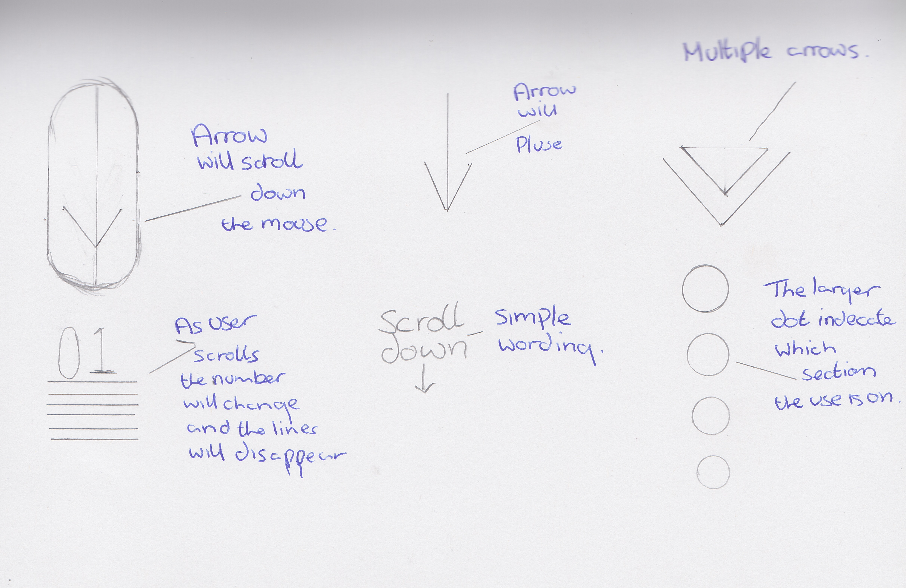

Brownbeardesign's
Pattern Library
Scroll Indicator
Mouse scroll Indicator - This is the scrolling mouse, its used to indicate that there is more infomation below that cant been seen. although this is a simple bit of code that can been used within any ones code its limits at this moment are that the moving arrow can not rotate and scroll upwards.
See the Pen animated scroll indicator by George Houghton (@TheM3xican) on CodePen.
Pulsing Arrow - This Arrow is a clean way to indicate that there is infomation below. this code is again a very simple to use and can be changed where needed. the down side to this particular code is that the aroow will always be facing downwards, eveen when scrolling up.
See the Pen pulsing arrow by George Houghton (@TheM3xican) on CodePen.
Circles - Thses circles can been used at the edge of the page as a way to show that the page goes further, at the moment there are activated by a simple hover command, this would nned to be changed so that the circles would change size permenatly when they have reached their destination.
See the Pen circle navigation by George Houghton (@TheM3xican) on CodePen.
Wireframes
Below are the wireframes that are created above.
